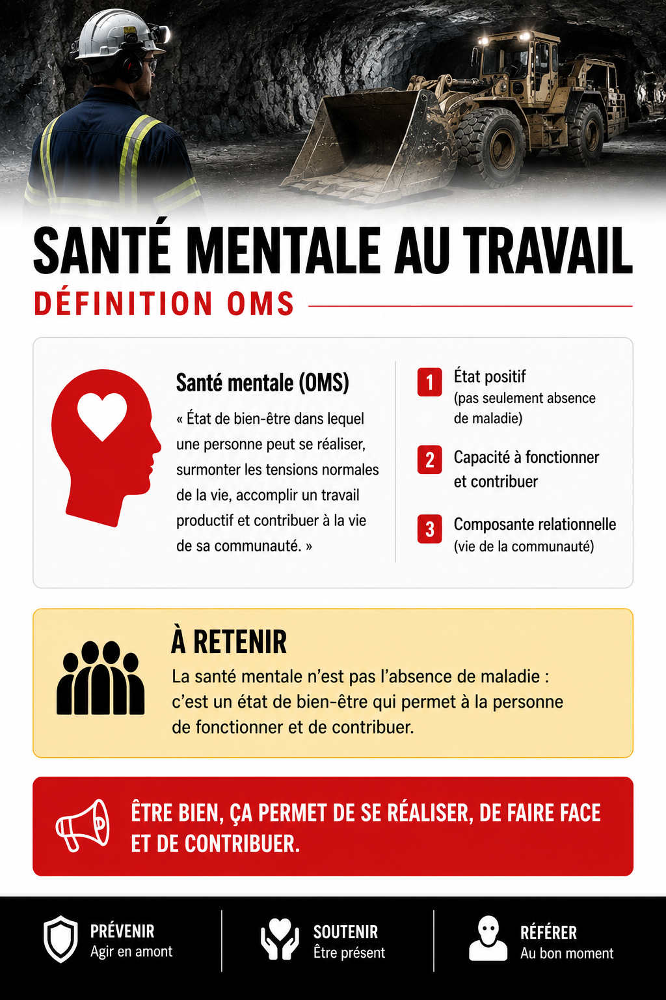
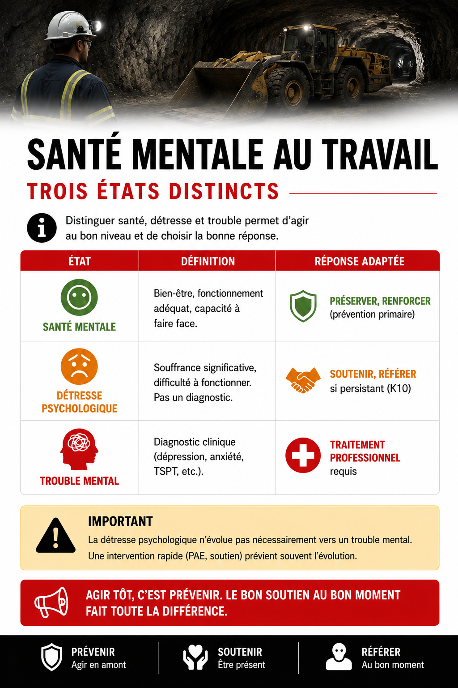
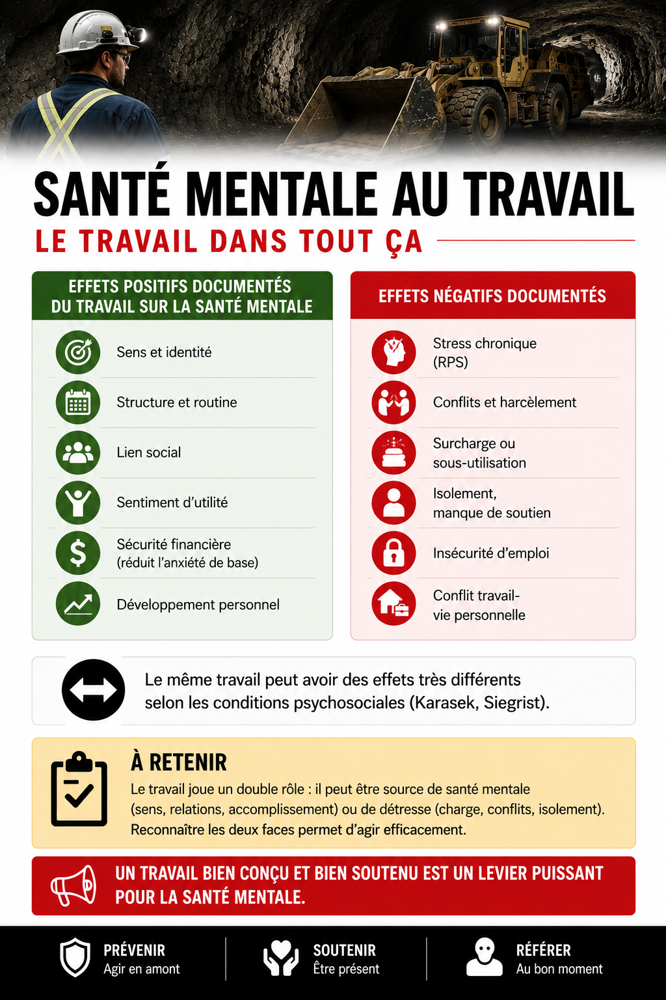
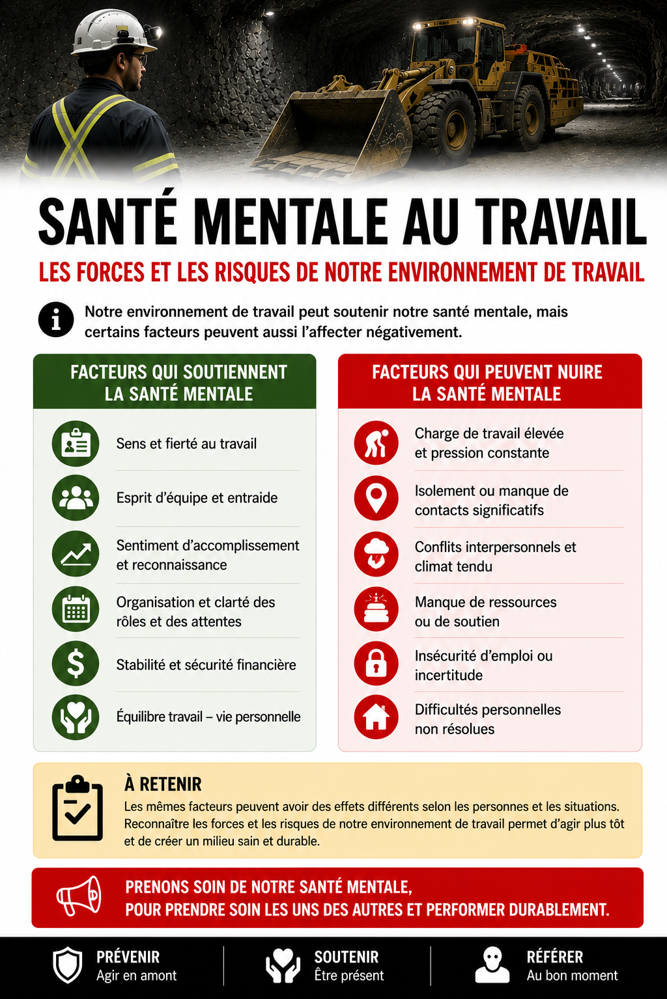

✅ Santé mentale au travail, concepts de base
Table des matières
{kind=link}

Toucher l'image pour l'agrandirL'essentiel : La santé mentale n'est pas l'absence de maladie : c'est un état de bien-être qui permet à la personne de fonctionner et de contribuer. Le travail joue un double rôle : il peut être source de santé mentale (sens, relations, accomplissement) ou de détresse (charge, conflits, isolement). Distinguer santé, détresse et trouble permet d'agir au bon niveau.
Définition OMS
Santé mentale (OMS) : « État de bien-être dans lequel une personne peut se réaliser, surmonter les tensions normales de la vie, accomplir un travail productif et contribuer à la vie de sa communauté. »
Trois éléments clés
- État positif (pas seulement absence de maladie)
- Capacité à fonctionner et contribuer
- Composante relationnelle (vie de la communauté)
Trois états distincts
{kind=link}

Toucher l'image pour l'agrandirImportant : la détresse psychologique n'évolue pas nécessairement vers un trouble mental. Une intervention rapide (PAE, soutien) prévient souvent l'évolution.
Le travail dans tout ça
{kind=link}

Toucher l'image pour l'agrandirEffets positifs documentés du travail sur la santé mentale
- Sens et identité
- Structure et routine
- Lien social
- Sentiment d'utilité
- Sécurité financière (réduit l'anxiété de base)
- Développement personnel
Effets négatifs documentés
- Stress chronique (RPS)
- Conflits et harcèlement
- Surcharge ou sous-utilisation
- Isolement, manque de soutien
- Insécurité d'emploi
- Conflit travail-vie personnelle
Le même travail peut avoir des effets très différents selon les conditions psychosociales (Karasek, Siegrist).
Application en mines
{kind=link}

Toucher l'image pour l'agrandirForces du travail minier pour la santé mentale
- Identité forte du métier
- Solidarité d'équipe
- Sentiment d'accomplissement (réalisation tangible)
- Sécurité économique pour les familles
Risques du travail minier
- Charge physique et mentale élevée
- Isolement géographique (FIFO, souterrain)
- Culture du « tough guy » (voir Le « tough guy » et l'évitement du signalement)
- Exposition à des événements traumatiques
- Conciliation vie-famille difficile
Posture organisationnelle souhaitable : reconnaître les deux faces, valoriser les forces, agir sur les risques.
Documents et outils
| Document | Type | Source |
|---|---|---|
| OMS, Mental health at work guidelines (2022) | PDF gratuit | who.int |
| Commission de la santé mentale du Canada, ressources | Site | mentalhealthcommission.ca |
| Norme CSA Z1003-13 | CSA | |
| Trousse INSPQ de surveillance | INSPQ | |
| Bell Cause pour la cause | Site | letstalk.bell.ca |
Voir le centre de ressources : 📁 Documents et outils et 🆘 Lignes d'aide et ressources de soutien.
Pour aller plus loin
Références
- OMS (2022). Mental health at work, guidelines.
- Commission de la santé mentale du Canada. Ressources sur la santé mentale au travail.
Articles wiki connexes
- Définition des risques psychosociaux
- Conséquences du stress sur la santé
- K10, PHQ-9
- Sensibilisation à la santé mentale